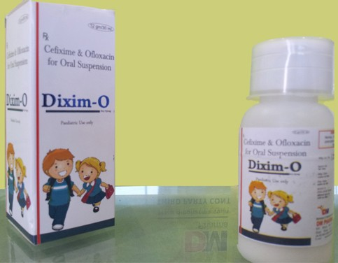

Indications:- Typhoid fever , Urinary tract infection and Respiratory tract infection.
- 
Cefixime Ofloxacin Dry Syrup

Cefixime Trihydrate + Ofloxacin
DRY SYRUP PRESENTATION:
Each 5 ml Contains:
Cefixime Trihydrate IP 50 mg
Ofloxacin IP 50 mg

Ofloxacin :
Ofloxacin is a quinolone antibiotic used for treating certain kinds of bacterial infections (ear infectons, urinary tract infections) and also useful in pelvic inflammatory disease (PID). It belongs to the fluoroquinolone class of antibiotics and it help to stops the multiplication of bacteria by inhibiting the reproduction and repair of their genetic material (DNA).
Cefixime Trihydrate :
Cefixime is a cephalosporin antibiotic ued to treat infections caused by bacteria and used to treat pneumonia, Bronchitis, Gonorrhea and Ear, Lungs, Throat and urinary tract infections.
It has been demonstrated by recent studies concomitant administration of an Cefixime trihydrate and Ofloxacin dry syrup shows significantly better symptoms relief compared with the modest improvement of Typhoid fever, Urinary tract infection, Respiratory tract infection and Bone and joint infection.

- Typhoid fever
- Urinary tract infection
- Respiratory tract infection
- Nosocomial infections
- Soft tissue infections
- Skin infection
- Bone and joint infection

Cefixime:
Cefixime is absorbed after oral administration and has a bioavailability of about 40% to 50%.
Its protein binding is approximately 60% with an average half-life of 3 to 4 hours.
The distribution volume is 3.5 l/kg and total clearance is approximately 15 l/h. The half-life in plasma is 10-1 2 hours and gives a 24 hour effect after dosing once daily. Its excretion is through renal and biliary route.
Ofloxacin:
It is absorbed after oral administration and has a bioavailability of about 50 to 70%.
Its protein binding is approximately 60% wEth an average half-life of 0.75 to 1 hours.
Its excretion is through renal route.

Cefixime:
It is bactericidal beta-lactam antibiotic (such as penicillins). Cefixime disrupt the synthesis of the peptidoglycan layer of bacterial cell walls. The peptidoglycan layer is important for cell wall structural integrity. The final transpeptidation step in the synthesis of the peptidoglycan is facilitated by transpeptidases known as penicillin-binding proteins (PBPs). PBPs bind to the D-Ala-D-Ala at the end of muropeptides (peptidoglycan precursors) to crosslink the peptidoglycan.
Ofloxacin:
Ofloxacin is a broad-spectrum antibiotic that is active against both Gram-positive and Gram-negative bacteria. It functions by inhibiting DNA gyrase, a type II topoisomerase, and topoisomerase IV, which is an enzyme necessary to separate replicated DNA, thereby inhibiting cell division. The fluoroquinolones interfere with DNA replication by inhibiting an enzyme complex called DNA gyrase.

BEFORE TAKING THIS MEDICINE TELL THE DOCTOR ABOUT ANY MEDICAL PROBLEMS AN ALLERGIES THAT CHILD HAS NOW OR HAS HAD.
This dry syrup is a combination of cefixime trihydrate and ofloxacin and both has unique mode of action because cefixime help disrupt the synthesis of the peptidoglycan layer of bacterial cell walls and ofloxacin inhibiting DNA gyrase, a type II topoisomerase, and topoisomerase IV, which is an enzyme necessary to separate replicated DNA, thereby inhibiting cell division.

- Dry mouth
- Diarrhoea

From the above discussion, it can be concluded that this Cefixime trihydrate and Ofloxacin dry syrup improve the quality of life of with Urinary tract infection, Typhoid fever, skin, bone and joint infection.
We are making superior quality of Cefixime trihydrate and Ofloxacin dry syrup that is used to treat Typhoid fever, skin, bone and joint infection.Our offered syrup is processed using high grade chemical compounds and other required drugs by our experienced quality controllers that ensure its quality, purity and chemical properties. Highly treasured among the clients for its reliability, accurate composition, excellent physical and purity, this syrup is offered to our esteemed clients at the market leading prices.